Spiritmaster · guía completa
Todo lo de la hoja de la comunidad rusa, ordenado y en español. Los nombres del juego van en inglés, tal cual salen en el cliente de Global, para que los encuentres en el juego.
Holiii 🤍 Soy Kala. Esta es una hoja de Spiritmaster de la comunidad rusa, muy completa, pero venía en ruso y era un lío de pestañas. Te la he dejado en español y ordenada, sin quitar nada de lo que cuenta: cada tabla, cada nota y cada captura siguen aquí.
Los nombres del juego (habilidades, estadísticas, objetos, jefes) los dejo en inglés, tal cual salen en tu cliente de Global, para que los busques en el juego sin traducir nada. Lo que te explico, en español. Las partes marcadas TW son del servidor de Taiwán: ahí algunos objetos aún no existen en Global y llevan el nombre de su captura.
Cómo leer esta guía en 2 minutos
- PvE y PvP
- PvE es contra monstruos (mazmorras, jefes). PvP es contra otros jugadores. Muchas cosas cambian según a qué vayas.
- Global y TW
- Global es nuestro servidor. TW es el de Taiwán, que va por delante en parches: lo de TW sirve para ver por dónde van los tiros, pero puede cambiar.
- Stigma
- Habilidades extra que equipas en sus casillas y que subes de nivel.
- Specialty
- Las mejoras numeradas que eliges dentro de cada habilidad. Cuando leas «Specialty 2, 4», marca la 2 y la 4.
- Manastone
- Las piedras que engarzas en el equipo para sumarle estadísticas.
- Pet Insight
- Las estadísticas que da tu mascota según su tipo (Cogni, Fera, Natura, Varian o Special), casilla a casilla.
- Soul Binding
- Las estadísticas extra de cada pieza, las que salen bajo «Soul Binding Rate» en el tooltip. Las tablas de «Línea» te dicen cuál buscar en cada una.
- Philosopher's Stone
- Philosopher's Stone: Revelation o Power. Se usa en una pieza y da una de esas líneas que no sale de otra forma (el tooltip la enseña como «Soul Fuse Philosopher's Stone…»).
- Objeto rojo
- Las piezas de cabecera roja (Heroic). Las capturas son de TW: en Global todavía no hay equipo rojo.
- Smite
- Es lo mismo que Double Chance: probabilidad de pegar doble. El equipo la llama Smite.
- Kina
- El dinero del juego.
- Summon (espíritus)
- El Spiritmaster invoca espíritus que pelean contigo: Fire, Water, Earth, Wind y Ancient.
- Combat Analysis
- La ventana del juego que mide tu daño. Las mediciones de la hoja son contra el muñeco de entrenamiento.
Si eres nuevo, por dónde empezar: 1) Global: lo pensado para nuestro servidor, qué estadísticas buscar en tu equipo y el orden de las Stigma. 2) Habilidades: qué subir y qué Specialty marcar (es de TW, pero las habilidades son las mismas). 3) El resto es consulta: equipo de referencia, daño, jefes y crafteo.
Pulsa cualquier imagen para verla en grande. La barra de arriba te lleva a cada parte.
Enlaces
Webs y herramientas
En la beta funcionaba, pero tiene problemas para mostrar personajes con el nick en cirílico.
En TW empezó a ir mal; en Global seguramente su medidor de DPS no funcione.
También tiene bugs, sobre todo con el Spiritmaster: puede partir al personaje en 2 líneas y el DPS total sale raro.
Global
Nota de la hoja, de antes del lanzamiento de Global: «se actualizará cuando salga Global».
Teoría para Global, todavía en proceso.
Se salta por completo las mazmorras T1. Eso sí, necesita los Daevanion Crystal de PvP que da el monolito del Abismo de nivel 16.
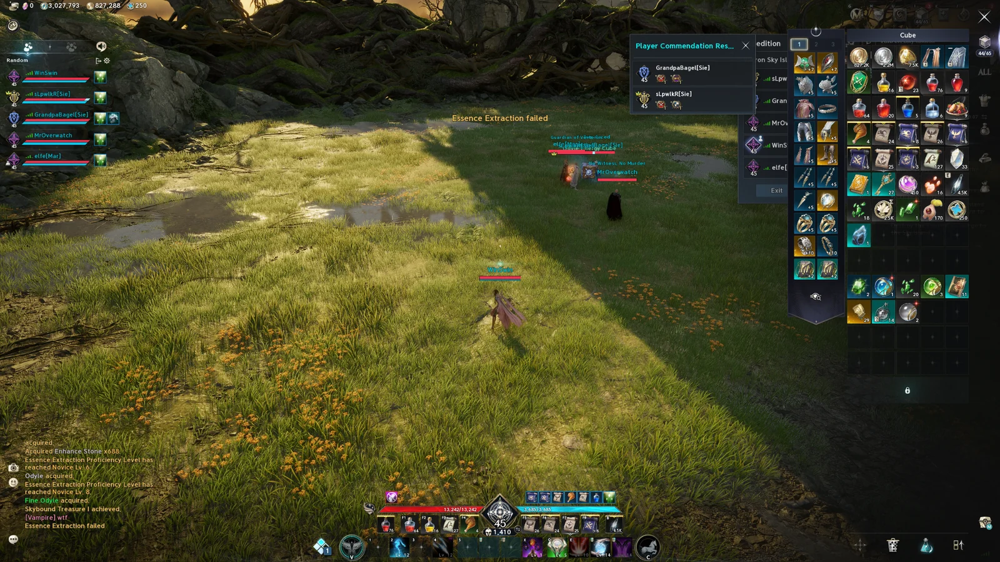
GLOBALGlobal
Qué estadística poner en cada casilla según el tipo de Insight.
Pet Insight (Genus Insight) · PvE
| Casilla | Cogni Insight | Fera Insight | Natura Insight | Varian Insight | Special Insight |
|---|---|---|---|---|---|
| 1 | Attack Bonus (16) | Attack Bonus (16) | Attack Bonus (16) | Attack Bonus (16) | Attack Bonus (16) |
| 2 | HP increase (2,4%) | HP increase (2,4%) | HP increase (2,4%) | HP increase (2,4%) | HP increase (2,4%) |
| 3 | Critical Hit (30) | Critical Hit (30) | Critical Hit (30) | Critical Hit (30) | Critical Hit (30) |
| 4 | Damage Boost (3%)/Critical Damage Boost (3%) | PvE Damage Boost (4%) | PvE Damage Boost (4%) | PvE Damage Boost (4%) | Double Chance (3%) |
| 5 | Attack Bonus (16) | Attack Bonus (16) | Attack Bonus (16) | Attack Bonus (16) | Attack Bonus (16) |
| 6 | Critical Hit (30) | Critical Hit (30) | Critical Hit (30) | Critical Hit (30) | Critical Hit (30) |
| 7 | Damage Tolerance (3%)/PvE Damage Tolerance (4%) | Damage Tolerance (3%)/PvE Damage Tolerance (4%) | PvE Damage Tolerance (4%) | PvE Damage Tolerance (4%) | Damage Tolerance (3%) |
| 8 | HP increase (2,4%) | HP increase (2,4%) | HP increase (2,4%) | HP increase (2,4%) | HP increase (2,4%) |
| 9 | Critical Hit (30) | Critical Hit (30) | Critical Hit (30) | Critical Hit (30) | Critical Hit (30) |
Pet Insight (Genus Insight) · PvP
| Casilla | Cogni Insight | Fera Insight | Natura Insight | Varian Insight | Special Insight |
|---|---|---|---|---|---|
| 1 | Attack Bonus (16) | Attack Bonus (16) | Attack Bonus (16) | Attack Bonus (16) | Attack Bonus (16) |
| 2 | HP increase (2,4%) | HP increase (2,4%) | HP increase (2,4%) | HP increase (2,4%) | HP increase (2,4%) |
| 3 | Accuracy Bonus (40) | Accuracy Bonus (40) | Accuracy Bonus (40) | Accuracy Bonus (40) | Accuracy Bonus (40) |
| 4 | Endurance Penetration (3%) | Endurance Penetration (3%) | Perfect Chance (3%) / Endurance Penetration (3%) | Endurance Penetration (3%) | Double Chance (3%) |
| 5 | Attack Bonus (16) | Attack Bonus (16) | Attack Bonus (16) | Attack Bonus (16) | Attack Bonus (16) |
| 6 | Accuracy Bonus (40) | Accuracy Bonus (40) | Accuracy Bonus (40) | Accuracy Bonus (40) | Accuracy Bonus (40) |
| 7 | Weapon Damage Tolerance (3%) | Weapon Damage Tolerance (3%) | Status Effect Resist (3%) | Status Effect Resist (3%) | Status Effect Resist (3%) |
| 8 | HP increase (2,4%) | HP increase (2,4%) | HP increase (2,4%) | HP increase (2,4%) | HP increase (2,4%) |
| 9 | Accuracy Bonus (40) | Accuracy Bonus (40) | Accuracy Bonus (40) | Accuracy Bonus (40) | Accuracy Bonus (40) |
Estadísticas del equipo · tabla 1 (daño: para PvE)
Cada «Línea» es una de las estadísticas de Soul Binding de la pieza (la lista que sale bajo «Soul Binding Rate» en el tooltip). La línea «Philosopher's Stone» solo sale usando una Philosopher's Stone (Revelation o Power) en esa pieza. La línea «objeto rojo» es para piezas rojas (Heroic), que en Global todavía no existen: hoy no se puede conseguir. La hoja no titula estas tablas: por sus estadísticas, la primera es de daño (PvE) y la segunda de resistencias (PvP).
| Línea | Weapon | Guard | Helm | Pauldrons | Breastplate | Greaves | Gloves | Cloak | Boots |
|---|---|---|---|---|---|---|---|---|---|
| 1 | Might | Might | Smite | Smite | Perfect Chance | Attack increase | Combat Speed | Smite | Move Speed |
| 2 | Damage Boost | Damage Boost | Attack increase | Critical Damage Boost | Damage Boost | Perfect Chance | Perfect Chance | Attack increase | Perfect Chance |
| 3 | Precision | Precision | |||||||
| 4 | Combat Speed | Combat Speed | |||||||
| 5 | Multi-hit Chance | Multi-hit Chance | |||||||
| 6 · con Philosopher's Stone | Weapon Damage Boost | Weapon Damage Boost | Attack | ||||||
| 7 · solo en objeto rojo | Attack | Attack | Attack | Attack | Attack | Attack | Attack | Critical Hit | Attack |
Accesorios · tabla 1 (PvE)
Ojo: Focused Eye, Hunter's Resolve y Concentrated Fire son habilidades de Ranger; la hoja original las pone así en esta tabla. Para un Spiritmaster, el equipo de la propia hoja lleva en pendientes y collar Spirit Strike, Mental Focus, Element Unification, Spirit Revitalization, Spirit Protection y Revitalization Contract, y en anillos Elemental Fusion, Combustion, Cold Shock, Jointstrike: Curse, Summon: Fire Spirit, Summon: Earth Spirit y Dimensional Control.
| Línea | Earrings 1 | Earrings 2 | Necklace | Ring 1 | Ring 2 | Bracelet 1 | Bracelet 2 |
|---|---|---|---|---|---|---|---|
| 1 | Move Speed | Move Speed | Combat Speed | Might | Might | Justice [Nezekan] | Justice [Nezekan] |
| 2 | Might | Might | Might | Precision | Precision | Illusion [Kaisinel] | Illusion [Kaisinel] |
| 3 | Precision | Precision | Precision | Attack | Attack | Destruction [Zikel] | Destruction [Zikel] |
| 4 | Attack | Attack | Attack | Habilidad a elegir (opcional) | Habilidad a elegir (opcional) | Time [Siel] | Time [Siel] |
| 5 | Focused Eye (skill) | Focused Eye (skill) | Focused Eye (skill) | Habilidad a elegir (opcional) | Habilidad a elegir (opcional) | Wisdom [Lumiel] | Wisdom [Lumiel] |
| 6 · con Philosopher's Stone | Hunter's Resolve (skill) | Hunter's Resolve (skill) | Hunter's Resolve (skill) | Habilidad a elegir (opcional) | Habilidad a elegir (opcional) | Death [Triniel] | Death [Triniel] |
| 7 · solo en objeto rojo | Concentrated Fire (skill) | Concentrated Fire (skill) | Concentrated Fire (skill) | Habilidad a elegir (opcional) | Habilidad a elegir (opcional) |
Estadísticas del equipo · tabla 2 (resistencias: para PvP)
| Línea | Weapon | Guard | Helm | Pauldrons | Breastplate | Greaves | Gloves | Cloak | Boots |
|---|---|---|---|---|---|---|---|---|---|
| 1 | Might | Combat Speed | Status Effect Resist | Status Effect Resist | Status Effect Resist | Status Effect Resist | Combat Speed | Status Effect Resist | Move Speed |
| 2 | Status Effect Chance | Might | Willpower | Critical Damage Boost | Willpower | Damage Tolerance | Endurance Penetration | Willpower | Endurance Penetration |
| 3 | Precision | Status Effect Chance | Weapon Damage Tolerance | Endurance Penetration | Weapon Damage Boost | Smite Resist | Status Effect Resist | Critical Damage Tolerance | Status Effect Resist |
| 4 | Combat Speed | Precision | Willpower | Damage Boost | Willpower | Willpower | Weapon Damage Tolerance | Willpower | |
| 5 · con Philosopher's Stone | Weapon Damage Boost | Weapon Damage Boost | |||||||
| 6 · solo en objeto rojo | Damage Boost | Damage Boost | Perfect Resist |
Accesorios · tabla 2 (PvP)
| Línea | Earrings 1 | Earrings 2 | Necklace | Ring 1 | Ring 2 | Bracelet 1 | Bracelet 2 |
|---|---|---|---|---|---|---|---|
| 1 | Intelligence | Intelligence | Intelligence | Intelligence | Intelligence | Freedom [Vaizel] | Freedom [Vaizel] |
| 2 | Move Speed | Move Speed | Combat Speed | Might | Might | Illusion [Kaisinel] | Illusion [Kaisinel] |
| 3 | Might | Might | Might | Precision | Precision | Destruction [Zikel] | Destruction [Zikel] |
| 4 | Precision | Precision | Precision | Habilidad a elegir (opcional) | Habilidad a elegir (opcional) | Time [Siel] | Time [Siel] |
| 5 · con Philosopher's Stone | Habilidad a elegir (opcional) | Habilidad a elegir (opcional) | Justice [Nezekan] | Justice [Nezekan] | |||
| 6 · solo en objeto rojo | Habilidad a elegir (opcional) | Habilidad a elegir (opcional) | Death [Triniel] | Death [Triniel] |
En los brazaletes cada estadística lleva su dios entre corchetes, como en el cliente. Las celdas amarilla y naranja están resaltadas así en la hoja original.
Prioridad para subir las estigmas
- Al nivel 45Summon: Ancient Spirit (el «gólem»), Enhance: Spirit's Benediction y Jointstrike: Corrode a nivel 5; Jointstrike: Destructive Attack a nivel 7.
- DespuésSube Jointstrike: Destructive Attack hasta nivel 10.
- Según vayas comprando estigmasSummon: Ancient Spirit hasta nivel 15, Enhance: Spirit's Benediction a nivel 10 y Jointstrike: Destructive Attack hasta nivel 15.
- Siguiente etapaSummon: Ancient Spirit a nivel 20 y Jointstrike: Destructive Attack a nivel 20. Solo después, Enhance: Spirit's Benediction a nivel 20: su nivel 15 no da nada de ataque.
- Lo últimoJointstrike: Corrode del nivel 5 al 20.
Flame Blessing no sale en esta lista, pero aparece en todas las mediciones de daño de la hoja (sección Medidor de DPS).
TWHabilidades, estigmas y manastones
- Nivel es al que subir la habilidad. Con puntos llegas a nivel 10; el resto sale de +1: nodos Daevanion (hasta +4), una Arcana (hasta +4) y las líneas «Lv. +1» del equipo. La hoja escribe «+1» junto a cada nombre.
- Specialty son las mejoras numeradas de las habilidades activas (las pasivas no tienen). Tienes 3 huecos, que se abren con la habilidad a nivel 8, 12 y 20; las opciones 1 a 3 piden nivel 8, la 4 nivel 12 y la 5 nivel 16. «Specialty 2, 4» = marca la 2 y la 4. Por eso «Nivel 16+ · Specialty 2, 5»: la 5 no sale antes.
- El «Lv.» que se ve en cada icono es el que tenía el autor, no el recomendado. Algunos marcan Lv. 25: en Global (Temporada 1) las Stigma llegan a nivel 20; el 25 es de TW.
Activas
| Habilidad | PvE · nivel y Specialty | PvP · nivel y Specialty | |
|---|---|---|---|
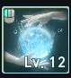 | Cold Shock | Nivel 16 · Specialty 3, 4 | Nivel 16 · Specialty 2, 5 si es nivel 20: Specialty 2, 4, 5 |
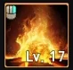 | Combustion | Nivel 20 · Specialty 2, 3, 5 | Nivel 20 · Specialty 2, 3, 4 para PvP masivo: 3, 4, 5 |
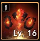 | Summon: Fire Spirit | Nivel 16+ · Specialty 2, 5 | Nivel 12+ · Specialty 2, 4 |
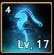 | Summon: Water Spirit | Nivel 12+ · Specialty 2, 4 | Nivel 12+ · Specialty 2, 4 |
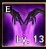 | Jointstrike: Curse | Nivel 12+ · Specialty 3, 4 | Nivel 16+ · Specialty 2, 5 |
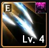 | Rapid Scattershot | No se usa | No se usa |
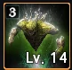 | Summon: Earth Spirit | Nivel 12+ · Specialty 2, 4 | Nivel 16+ · Specialty 2, 5. a nivel 20: 2, 3, 5 |
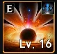 | Dimensional Control | Nivel 16+ · Specialty 2, 3 | Nivel 12+ · Specialty 2, 4 |
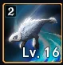 | Summon: Wind Spirit | No se usa | No se usa |
| Soul's Cry | No se usa | Nivel 12+ · Specialty 2, 4 | |
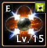 | Elemental Fusion | Nivel 20 · Specialty 2, 3, 5 | Nivel 20 · Specialty 2, 3, 5 |
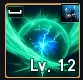 | Defiance | Nivel 8 · Specialty 3 | Nivel 16+ · Specialty 4, 5 o 3, 5 |


Pasivas
| Habilidad | PvE · nivel | PvP · nivel | |
|---|---|---|---|
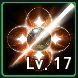 | Spirit Strike | Nivel ±30 | Nivel 17-18 |
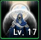 | Spirit Protection | Nivel ±15 | Nivel 25+ |
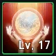 | Spirit's Descent | Nivel ±15 | Nivel 1+ |
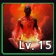 | Corrode | Nivel ±15 | Nivel 10+ |
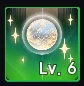 | Spirit Revitalization | Nivel 20+ | Nivel ±15 |
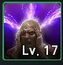 | Mental Focus | Nivel ±30 | Nivel 20+ |
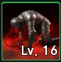 | Consecutive Countercurrent | Nivel 10+ | Nivel 10+ |
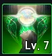 | Spirit Communion | Nivel 1+ | Nivel 10+ |
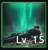 | Revitalization Contract | Nivel 1+ | Nivel 25+ |
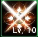 | Element Unification | Nivel ±25 | Nivel 17-18 |


Qué estigmas llevar


Manastones


- SDamage Boost · Attack · Accuracy · Front Attack Damage Boost
- ACritical Damage Boost · Weapon Damage Boost · Front Attack
- BLo que quede que se pueda aprovechar; Critical Hit solo para muy poco tiempo
Smite y Double Chance son la misma estadística: el equipo la llama Smite.


- SPvP Damage Boost · PvP Accuracy · Accuracy
- APvP Attack · Attack
TWEquipo rojo PvP

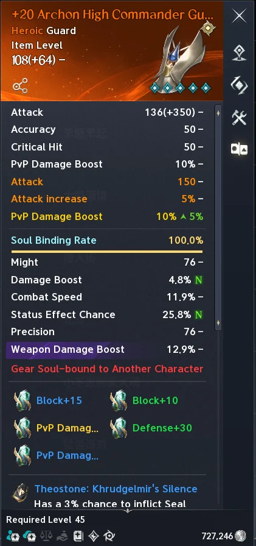

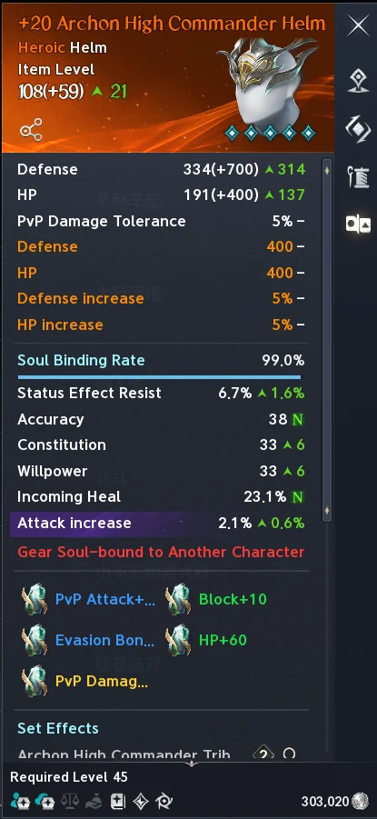

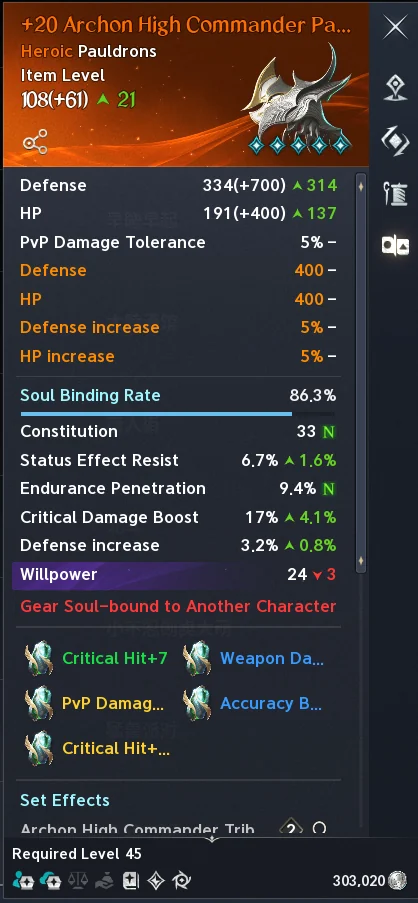

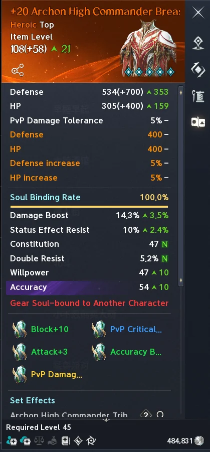

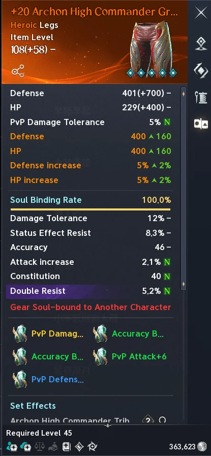

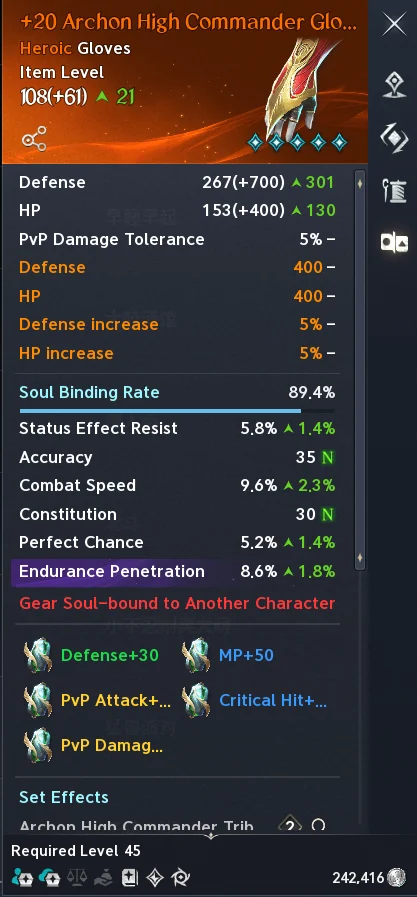

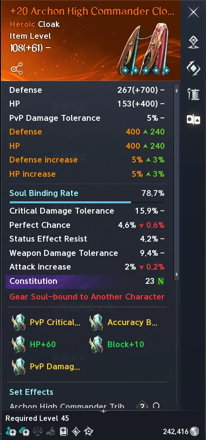

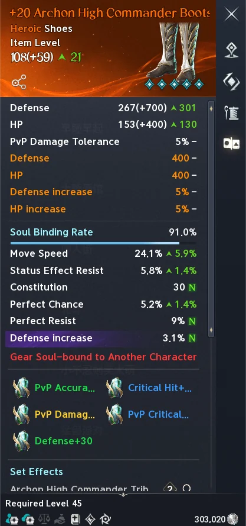

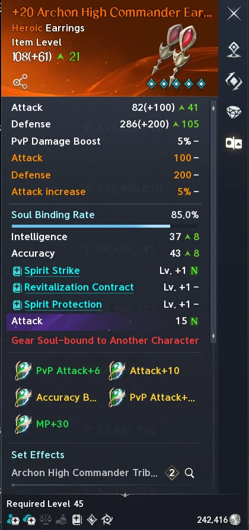


TWEquipo rojo PvE
Notas de la hoja
Cambia Corrode por Element Unification.
Si la pieza no es roja, sáltate Critical Hit y con la Philosopher's Stone consigue Spirit Revitalization (o al revés, lo que te salga antes).
Estadísticas que SÍ o SÍ tienen que estar en el equipo:
- Attack increase
- Smite
- Perfect Chance
- Combat Speed (la hoja pone «Attack Speed»)
- Move Speed
- Damage Boost
- Critical Damage Boost
- Attack
En las piezas rojas donde ya tengas Spirit Strike, Mental Focus y las 2 habilidades de arriba, la casilla que queda puedes rematarla con Mental Focus.
Spirit Strike y Mental Focus tienen que estar siempre.
Prioridad en las «ЛС» (así las abrevia la hoja; por las estadísticas, son las Manastones):
- Damage Boost
- Front Attack Damage Boost
- Attack
- Accuracy
- Critical Damage Boost
- Weapon Damage Boost
- Front Attack
- Critical Hit
Lo ideal: 2 estadísticas amarillas (las líneas en amarillo del tooltip) de las 4 primeras.


TWMedidor de DPS
Todas las mediciones son contra el muñeco de entrenamiento (Melee Training Scarecrow) con la ventana Combat Analysis del juego. «Con el personaje» es tu daño total con el espíritu mientras tú también atacas (3 minutos); «solo el espíritu» es él sin ti (1 minuto).
| Prueba | Tiempo | Daño total | Qué te dice |
|---|---|---|---|
| Solo el espíritu: Earth / Fire / Water / Wind | 1:00 | 11,44M / 11,01M / 8,96M / 7,05M | Earth y Fire son los que más pegan solos; Wind, el que menos |
| Con el personaje: Fire / Earth / Water / Wind | 3:00 | 90,48M / 87,28M / 87,08M / 77,07M | Con Fire sacas más daño total; con Wind, menos |
| Ancient Spirit + Fire Spirit | 3:02 | 152,59M | Los dos juntos rinden mucho más: 152M frente a unos 90M con uno solo |
| Con todas las habilidades | 3:01 | 230,32M (1,26M de DPS) | La referencia de la rotación completa |
| Combo 1 / Combo 2 | 3:30 / 3:26 | 259,58M / 257,14M (1,23M / 1,24M de DPS) | Por segundo, el combo 2 rinde un pelín más |
| Tras la actualización del 26 de agosto | 1:06 | 115,07M (1,74M de DPS) | Medición corta tras el parche |
| De frente / por detrás / de lado | 2:44 | 290,37M / 291,96M / 285,68M | La posición cambia poco: menos de un 8 % entre la mejor y la peor medición |
| Otra medición de frente | 2:45 | 307,19M | La misma prueba repetida |
| Semana anterior → 02/09 → 04/09 | 2:44-2:45 | 346,11M → 372,35M → 388,96M | De una semana a otra, el daño fue subiendo |
| Antes del parche del 08/09 | 2:44 | 410,13M (2,49M de DPS) | La medición más alta de la hoja |
Ver las 27 capturas de las mediciones


TWVelocidad de ataque de los espíritus


TWJefes de campo
Los tiempos son los de TW. En Global cada jefe vuelve a salir contando desde que lo matan, y Guardian Lord Nahma sale el domingo y el viernes a las 21:00. Los nombres de los jefes son los de Global. Las zonas, las de la base de datos metabot.gg (sin comprobar en el juego); donde la hoja ponía otra, la ves debajo en pequeño.
Elyos · Verteron
| Zona | Jefe | Antes (TW) | Ahora (TW) |
|---|---|---|---|
| Western Cantas Valley | Kernon of the West | 1 h | 30 min |
| Eastern Cantas Valley | Neikel of the East | 1 h | 30 min |
| Ellun River Marsh | Rotten Kutar | 1 h | 30 min |
| Ellun River Midstream | Blooming Korin | 2 h | 1 h |
| Destroyed Abyss Gate la hoja: ruinas de la fortaleza | Bodyguard Teegant | 3 h | 1 h 30 min |
| Verteron Fortress Ruins | Kusan the Mad Gladiator | 4 h | 2 h |
| Verteron Fortress Ruins | Ritualist Garshim | 4 h | 2 h |
| Northern Tolbas Forest | Bloodfang Pnyn | 6 h | 3 h |
| Night Dew Cave la hoja: Tolbas Forest | Furious Saursus | 6 h | 3 h |
| Aullaeu Village | Scholar Aulla | 4 h | 2 h |
| Forest of Exiles la hoja: Aullaeu Village | Chaser Taulo | 4 h | 2 h |
| Aullaeu Village | Forest Warrior Aullamu | 8 h | 4 h |
| Rock Tomb Hill la hoja: meseta de Altamia | Heretic Layla | 6 h | 3 h |
| Altamia Canyon | Black Tentacle Lawa | 8 h | 4 h |
| Destroyed Temple Site la hoja: meseta de Altamia | Centurion Demiros | 8 h | 4 h |
| Contaminated Sanctum la hoja: meseta de Altamia | Divine Ansas | 12 h | 6 h |
| Drana Processing Area la hoja: Drana Plantation | Harvest Manager Moshav | 6 h | 3 h |
| Drana Processing Area la hoja: Drana Plantation | Sentinel K'nash | 8 h | 4 h |
| Nahid Brigade Fortress | Researcher Setram | 12 h | 6 h |
| Garden of the Illusion God la hoja: «jardín del buen dios» | Phantasm Kasia | 12 h | 6 h |
| Southern Altamia Highland | Silent Dartan | 12 h | 6 h |
| Eastern Altamia Highland | Soul Ruler Kashapa | 12 h | 6 h |
| Drana Plantation la hoja: «bosque rojo» | High Commander Lagta | 24 h | 12 h |
| Eternal Isle | Eternal Gartua | 24 h | 12 h |
Asmodians · Altgard
| Zona | Jefe | Antes (TW) | Ahora (TW) |
|---|---|---|---|
| Dredgion Crash Site | Melted Danar | 1 h | 30 min |
| Nameless Cemetery | Black Warrior Aed | 1 h | 30 min |
| Sanctum Outpost | Faithful Rajit | 1 h | 30 min |
| Sanctum Outpost | Berserker Vargor | 2 h | 1 h |
| Moslan Forest | Blood Warrior Lannar | 3 h | 1 h 30 min |
| Moslan Forest | Predator Garsan | 4 h | 2 h |
| Uruthumheim | Deceiver Trid | 4 h | 2 h |
| Purifying Forest | Blue Wave Kelpina | 4 h | 2 h |
| Dranactus | Advisor Resana | 6 h | 3 h |
| Dranactus | High Overseer Nutah | 4 h | 2 h |
| Basfelt Ruins | Special Operations Leader Linx | 6 h | 3 h |
| Legion Base Ruins la hoja: Basfelt Ruins | Desecrator Newbold | 8 h | 4 h |
| Basfelt Ruins | Specter Archon Axios | 8 h | 4 h |
| Fafnite Deposit | Addicted Hardirun | 6 h | 3 h |
| Western Gribade Highland la hoja: cañón oeste de Gribade | Executioner Barthien | 8 h | 4 h |
| Eastern Gribade Highland la hoja: cañón este de Gribade | Drakan Battalion Weapon Guruta | 12 h | 6 h |
| Black Claw Village | Veteran Shujakan | 6 h | 3 h |
| Black Claw Village | Visionary Karuka | 8 h | 4 h |
| Lagta Fortress | Dark Shadow Vishwada | 12 h | 6 h |
| Impetusium Square | Sharp Shylak | 12 h | 6 h |
| Purifying Forest* | Silent Dartan* | 12 h | 6 h |
| Fafnite Deposit* | Soul Ruler Kashapa* | 12 h | 6 h |
| Lagta Fortress* | High Commander Lagta* | 24 h | 12 h |
| Immortal Isle | Immortal Gartua | 24 h | 12 h |
* Sin confirmar en Global: la hoja pone en Altgard estos tres nombres, que también salen en Verteron. Lagta Fortress sí es una zona de Altgard.
Abismo
| Zona | Jefe | Antes (TW) | Ahora (TW) |
|---|---|---|---|
| Lower Reshanta | Watcher Kaira | 1 h | 1 h |
| Archipelago of Siel's Wings · Siel's Right Wing | Argo, the Spirit King | 24 h | 12 h |
| Reshanta's Root | Guardian Lord Nahma | Domingo | Sábado y domingo |
※ La probabilidad de que aparezca Watcher Kaira se ha duplicado.
TWDaevanion (antiguo)


TWCrafteo
Opción A · con 5 Guard como material
| Material | Cantidad | Precio (Kina) | Total (Kina) |
|---|---|---|---|
| Guard | 5 | 2.262.000 | 11.310.000 |
| Artisan's Refining Stone* | 50 | 2.300.000 | 115.000.000 |
| Robust Balaur Scale* | 122 | 70.000 | 8.540.000 |
| Wrathful Mind | 18 | 3.630.000 | 65.340.000 |
| Wrathful Will | 27 | 3.700.000 | 99.900.000 |
| Wrathful Ego | 42 | 140.000 | 5.880.000 |
| Maddened Wrathful Curse / Heartblood* | 19 | 49.000 | 931.000 |
| Orichalcum Ingot* | 121 | 345.000 | 41.745.000 |
| Odyle | 70 | 312.000 | 21.840.000 |
| Total | 370.486.000 |
Opción B · partiendo de un Guard T5
| Material | Cantidad | Precio (Kina) | Total (Kina) |
|---|---|---|---|
| T5 Guard | 1 | 0 | 0 |
| Artisan's Refining Stone* | 18 | 2.300.000 | 41.400.000 |
| Robust Balaur Scale* | 122 | 70.000 | 8.540.000 |
| Wrathful Belief | 40 | 254.000 | 10.160.000 |
| Wrathful Flame | 40 | 2.200.000 | 88.000.000 |
| Kina | 50.000.000 | 1 | 50.000.000 |
| Maddened Wrathful Curse / Heartblood* | 19 | 49.000 | 931.000 |
| Orichalcum Ingot* | 46 | 345.000 | 15.870.000 |
| Odyle | 26 | 312.000 | 8.112.000 |
| Total | 223.013.000 |
* La hoja solo da el nombre corto («Артисан», «Робуст», «Maddened», «Orichalum», mal escrito). En el cliente de Global son: Artisan's Refining Stone (o Artisan's Ultimate Refining Stone, la hoja no dice cuál), Robust Balaur Scale (o Enhanced Robust Balaur Scale), Maddened Wrathful Curse o Maddened Wrathful Heartblood (no se sabe cuál de los dos) y Orichalcum Ingot (u Orichalcum Ore).
TWBrawler
El Brawler es una clase de KR y TW que todavía no ha llegado a Global.